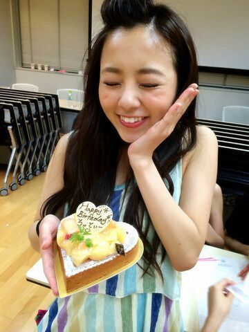

| 2014/07 24 Thu | ..*不思議なケーキ..* さ くさく。 |
わ〜〜〜


仕事終わりに祝ってもらいました..*
ろってぃーです.♪
今日は 昨日よりも暑いですね..*
立ってるだけで汗が出ます..*
サマーガール.ろってぃ−の時代がきた わら
毎年こうれいのセリフやねん..*↑↑↑

生誕祭の時に、
メンバーの かずみん、あみ、ひなめろ、ちーちゃん、かなりん、まりか、あすかも一緒に祝ってくれました。
その時に、チームDから 一人一人お手紙があって、本当に本当に嬉しかったんです..*
とゆうか、やっばりDは なんか濃いな
 と思いました //
と思いました //
Dから頂いたメッセージ見てください\*´▽`*/
まひろへ。
いつも笑顔の可愛いまひろ、
いつも野原を飛び回る柴犬の様に元気すぎるまひろ。
皆に喋りかけてるのに割りと全員にスルーされてしまうことが多い、そしてそれを『ええねん まひろはな 昔からこうゆうとこあんねん、ハッハ.♪』と言ってめげないまひろ、どんなまにも私は大スキです。
そしてこの間、アンダーライブのリハでまひろが『孤独兄弟』を踊ってるところを見て、ここだけの話、涙が出てきました。私はこんなにも歌えて踊れる子とお友達なんだと。これからも、私とおばあちゃんになってもお友達でいて下さい。大スキ !! 〜By 愛未〜
ろっちー !!
誕生日オメイジング !!!
ろっちーはいつも『かずみーん!!』
と元気よく話しかけてくれて、本当に可愛いです.♪
何でも笑顔で応えてくれるろっちー !!
これからもよろしくねー☆ミ 〜Kas〜
まに(。´・ω・`。)
HAPPY BIRTH DAY //
いつも暇な時などにメールを送ってきたり〜、最近は文章じゃなくって、声を送ってきたり歌を送ってきたりするまにがスキです.♪
これからも元気なまにでいてね !
早くチームDで遊びに行こーね !! 〜Hinapyon〜
〜まひろ〜
まひろ、お誕生日おめでとう !!
歌も上手くて、ダンスも上手くて、いつもハッピーオーラ全開でポジティブで、まひろは私に無いものをたくさん持ってます。すごく 羨ましいな〜っていつも思ってるよ !! 普段は『ちーちゃーーん.♪』って寄って来て まひろスマイル全開で走ってくるのが本当 柴犬みたいで可愛いです^^笑 それなのに、私が泣いてしまった時、『何でちーちゃんはいつも弱音をはかないの？ まひろらには弱いとこ見せてよ 』って言ってくれたまひろに救われました。いつもありがとう。まひろ大すきよ // またDで遊びに行こう。 〜ちはる〜
本当に、ファンの皆さんからの愛と同時に、メンバーからの愛もいっぱいいっぱい伝わりました (/-＼*)
まひろも、皆のこと大好き !!!
ぢゃあ、今日も1日頑張りましょう.♪
後ろにらりんがいる..*
たまたまいい位置にいた.///あは
のし。
コメント(204)
2014/07/24 13:24